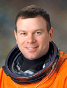

Lyndon B. Johnson Space Center
Houston, Texas 77058
|
National Aeronautics and Space Administration Lyndon B. Johnson Space Center Houston, Texas 77058 |
 |
Biographical Data |
||
James M. Kelly (COLONEL, U.S. AIR FORCE, RET.)
NASA Astronaut
PERSONAL DATA: Born in Burlington, Iowa.
EDUCATION: Graduated from Burlington Community High School, Burlington, Iowa, in 1982; received a Bachelor of Science degree in Astronautical Engineering from the U.S. Air Force Academy in 1986; a Master of Science degree in Aerospace Engineering from the University of Alabama in 1996.
SPECIAL HONORS: Distinguished Graduate in the class of 1986 at the U.S. Air Force Academy, with honors; Distinguished Graduate of Undergraduate Pilot Training at Euro-NATO Joint Jet Pilot Training at Sheppard Air Force Base, Wichita Falls, Texas; Top Gun at F-15 initial training at Luke Air Force Base, Phoenix, Arizona; Distinguished Graduate and Liethen-Tittle award for the Outstanding Graduate of the Air Force Test Pilot School, class 93B; Defense Superior Service Medals (two), Meritorious Service Medal, Air Force Commendation Medals (two), Outstanding Unit Awards (three), Combat Readiness Medals (two), and various other service awards. Named a University of Alabama College of Engineering Distinguished Fellow.
EXPERIENCE: Kelly received his commission from the U.S. Air Force Academy in May 1986 and was designated an Air Force Pilot in October 1987. He then reported to the 426th F-15 Replacement Training Unit at Luke Air Force Base, Phoenix, Arizona for initial F-15 Eagle training. After completion, he was assigned to the 67th Fighter Squadron, 18th Fighter Wing at Kadena Air Base in Okinawa, Japan. During his tour in Japan, he was designated as an instructor pilot, evaluator pilot, and mission commander. He was reassigned in April 1992 to Otis Air National Guard Base in Cape Cod, Massachusetts, as part of Project TOTAL FORCE, where he continued flying the F-15 as an instructor and mission commander. He was selected for Air Force Test Pilot School at Edwards Air Force Base, Edwards, California, where he graduated in June 1994. After graduation, he was assigned to the Air Force Flight Test Center detachment at Nellis Air Force Base in Las Vegas, Nevada, where he was a project test pilot and assistant operations officer. He was at Nellis when selected for the astronaut program. Kelly retired from the Air Force in September 2007.
He has logged over 3,800 flight hours in more than 35 different aircraft.
NASA EXPERIENCE: Selected as an astronaut by NASA in April 1996, Kelly reported to NASA’s Johnson Space Center in August 1996. Technical assignments to date include tasks in the Space Shuttle Program, the International Space Station branch, capsule communicator (CAPCOM), and cape crusader where he served as a member of the Astronaut Support Personnel team responsible for shuttle launch preparation. Kelly was the pilot on flights STS-102 and STS-114, and has logged over 641 hours in space. He currently serves as CAPCOM Branch Chief.
SPACE FLIGHT EXPERIENCE: STS-102 Discovery (March 8, 2001 through March 21, 2001) was the eighth shuttle mission to visit the International Space Station. Mission accomplishments included the delivery of the Expedition 2 crew and the contents of the Leonardo Multi-Purpose Logistics Module (MPLM), the completion of two successful space walks, the return to earth of the Expedition 1 crew, as well as the return of Leonardo, the reusable cargo carrier built by the Italian Space Agency. Mission duration was 307 hours and 49 minutes.
STS-114 Discovery (July 26-August 9, 2005) was the Return to Flight mission during which the shuttle docked with the International Space Station and the crew tested and evaluated new procedures for flight safety and shuttle inspection and repair techniques. After a two week, 5.8 million mile journey in space, the orbiter and its crew of seven astronauts returned to land at Edwards Air Force Base, California. Mission duration was 333 hours, 32 minutes, 48 seconds.
JULY 2014